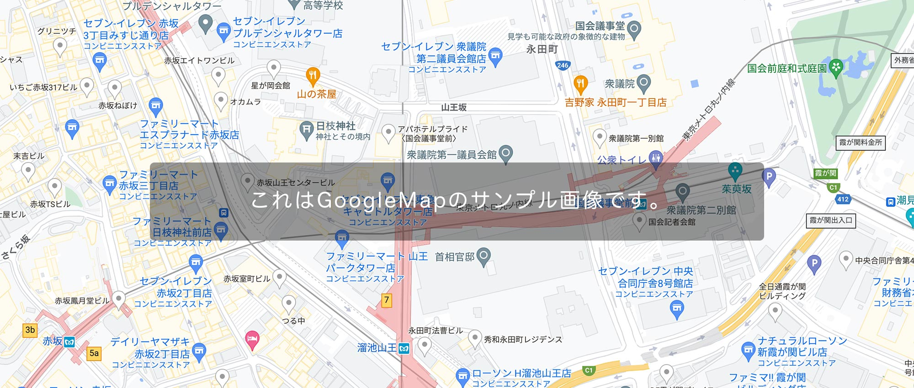

会社概要
| 見出し | ここに説明など入れて下さい。サンプルテキスト。 |
|---|---|
| 見出し | ここに説明など入れて下さい。サンプルテキスト。 |
| 見出し | ここに説明など入れて下さい。サンプルテキスト。 |
| 見出し | ここに説明など入れて下さい。サンプルテキスト。 |
| 所在地 | Google Mapで地図を埋め込みたい場合はマニュアルをご覧下さい。  |
2021年10月「以前」にテンプレートを利用した事のあるお客様へ
2021年11月以降からの配布テンプレートについて、かなり仕様が変更されましたので、メインとなる内容のみピックアップさせて頂きます。
今後しばらく新作テンプレートの手直しが入るかもしれません。
- モバイルファーストのcssに変更しました。小さな端末からの設定になるのでご注意下さい。
- floatでのレイアウトから、主にflexボックスを使ったレイアウトへ変更されました。
- 2022年6月でMicrosoftのIEサポートが終了したのに伴い、弊社テンプレートもIE対応(バグ対応など)を終了しました。
当テンプレートの使い方
初心者向けマニュアル公開中
画像加工やテンプレートの編集方法、無料サーバーを使ってサイトを公開するなど動画をまじえてわかりやすく解説しています。
初心者向けマニュアルはこちら。
titleタグ、copyright、metaタグ、他の設定
titleタグの設定はとても重要です。念入りにワードを選んで適切に入力しましょう。
まず、htmlソースが見れる状態にして、
<title>企業・ビジネスサイト向け 無料ホームページテンプレート tp_biz58</title>
を編集しましょう。
あなたのホームページ名が「SAMPLE COMPANY」だとすれば、
<title>SAMPLE COMPANY</title>
とすればＯＫです。SEO対策もするなら冒頭に重要なワードを入れておきましょう。
copyrightを変更しましょう。
続いてhtmlの下の方にある、
Copyright© SAMPLE COMPANY All Rights Reserved.
の部分もあなたのサイト名に変更します。
metaタグを変更しましょう。
htmlソースが見える状態にしてmetaタグを変更しましょう。
ソースの上の方に、
content="ここにサイト説明を入れます"
という部分がありますので、テキストをサイトの説明文に入れ替えます。検索結果の文面に使われる場合もありますので、見た人が来訪したくなるような説明文を簡潔に書きましょう。
h1ロゴのaltタグも変更しましょう。
html側に、
alt="SAMPLE COMPANY"
となっている箇所があるので、この部分もあなたのサイト名に変更しましょう。
アイコン画像について（Font Awesomeの解説）
imagesフォルダに入っていない画像（アイコン）は全てFont Awesomeの素材です。
Font Awesome 公式サイト
Font Awesome アイコン一覧
iタグを使ってhtmlに直接アイコンを読み込む場合と、cssの擬似要素を使って読み込む場合があります。
それぞれ他のアイコンに置き換えたい場合は、当サイトのマニュアルをお読み下さい。
Font Awesomeを使う為に必要なタグ、ファイル類。
cssフォルダのstyle.css冒頭で読み込んでいる「Font Awesomeの読み込み」のブロック。
何年も経過した場合、動作に問題が出てくる可能性があります。
テンプレートを編集していないのに突然動きがおかしくなった場合は、style.cssの冒頭でCDNから読み込んでいるFont Awesome関連のファイルのバージョンを変更して動作するか確認してみて下さい。
メインメニューについて
900px以上で左側への固定表示に、900px未満で開閉ブロックになります。
現在ページ表示中のメニューについて
現在表示中のページのメニューには色がつきますが、その説明です。
通常は、
<li><a href="">メニュー名</a></li>
のようになっていますがこれを、
<li class="current"><a href="">メニュー名</a></li>
とする事で色がつきます。
自動で色がつくわけではないのでご注意下さい。
トップページのスライドショー
スライドショー写真は、弊社のフリー写真サイトで無料ダウンロードできます。
画像を入れ替えたい場合
「1.jpg」「2.jpg」「3.jpg」の3枚の画像を用意してimagesフォルダに上書きして下さい。大きさはある程度大きければバラバラでも構いませんが、必ず「縦横比」を合わせて下さい。
また、拡張子が「jpeg」や「JPG」と少し違った場合にうまく表示できない可能性があるので梱包画像の拡張子と合わせて下さい。拡張子を変更したい場合はhtml側を直接変更しても構いません。
画像は容量が軽くなるようにできるだけ圧縮して下さい。容量が大きいと初動がガタつきます。
ループを一回で終了したい場合
cssフォルダのslide.cssの、
@keyframes slide3 {
の、
90% {opacity: 1;}
100% {opacity: 0;}
を、以下に変更。
90% {opacity: 1;}
100% {opacity: 1;}
続いて、
.slide1,.slide2,.slide3 {
の、
animation-iteration-count:infinite;
を以下に変更。
animation-iteration-count:1;
固定画像にしたい場合
cssフォルダのslide.cssを開き、冒頭の
「/*スライドショーのキーフレーム設定」
のブロックを削除。
次に、index.htmlから使う画像だけを残してあとは削除。
残した画像タグからclass指定（class="slide1"などの）を外して下さい。
画像を囲っているasideタグなどはレイアウト設定が入っているので削除しないよう注意して下さい。
速度や枚数などの調整
cssフォルダのslide.cssで行って下さい。解説も入っています。
スライドショーに関する詳しい使い方はこちら。
トップページの「News」ブロックのアイコンについて
「その他」「サービス」など、テキスト部分はhtml側で直接入力されていますので必要に応じて編集して下さい。
アイコン用の文字数が増えすぎるとレイアウトが崩れます。ご注意下さい。
背景色は、cssフォルダのstyle.cssの、
#new dt span
や、
#new dt span.icon-bg1
のbackgroundでそれぞれ変更できます。
新しいアイコンを追加したい場合、上記の「#new dt span.icon-bg1」ブロックをコピペし、.icon-bg1部分を.icon-bg2などに変更し、backgroundに好きな色を設定します。
後はhtml側で、
<span class="icon-bg2">〜〜〜</span>
などとすればOKです。
フォントサイズ（px,rem,em）について
cssフォルダのstyle.cssで、基準となるフォントサイズを２箇所、pxで記載しています。
全体的にフォントサイズを大きくまたは小さくしたいなら、この基準サイズだけを変更すればOK。
１つ目はstyle.cssの冒頭に記載されている以下で、小さな端末向けです。
font-size: 13px;
２つ目は下の方にある、画面幅900px以上の端末向けで、以下。
font-size: 14px;
「rem」の単位がついたフォントは、上の２箇所あるpxのサイズに対して「相対的」に出しているサイズになります。
例えば、900px未満の画面幅の時の基準サイズは「13px」なので、他の要素などで26pxで表示させたい場合は、
26px ÷ 13px = 2rem
となります。（cssの指定は、font-size: 2rem; となる。）
10pxにしたい場合も同様です。この場合、
10px ÷ 13 = 0.769...
と小数点が続いてしまいますが、厳密に出す必要はないので、適当に切って、
font-size: 0.75rem;
あたりにしておけばOKです。
または計算などせず、「見た目」でremの数値を決めてしまってもいいでしょう。
実際このテンプレートのremは、厳密に割り出したわけじゃなく、雰囲気(何となく適当)で指定しています。
ちなみに、emも数カ所使っていますが、これは親の文字サイズを基準とした文字サイズ指定になります。